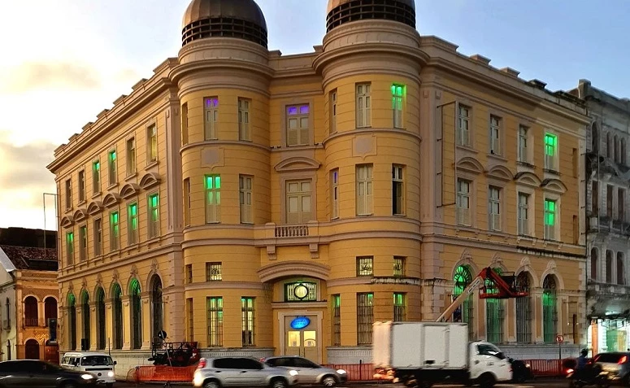
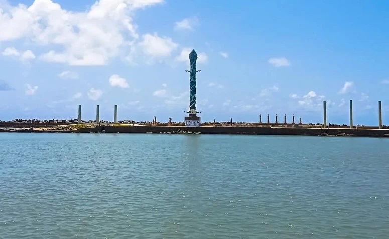

LOCAIS PARA TURISTAR EM RECIFE
PRAÇA DO MARCO ZERO

Também chamada de praça Barão do Rio Branco, o local é considerado um dos destinos mais visitados de Recife.
A atração é cercada por construções e prédios históricos, como o antigo edifício London River Plate Bank e a
Associação Comercial de Pernambuco.
Lá também está situada a pintura da rosa-dos-ventos, que marca o km 0 zero de Recife.
CLIQUE AQUI E SAIBA MAIS
______
EDIFÍCIO DA CAIXA CULTURAL
Localizada a poucos metros da Praça do Marco Zero, o edifício Caixa Cultural também valoriza a história local.
Construído em 1912, o espaço funcionou durante muito tempo como a Bolsa de Valores de Pernambuco.
Atualmente é palco de diversas exposições que valorizam a música, o teatro e outras manifestações culturais.
O espaço está aberto para visitação de terça a domingo, das 10h às 18h. A entrada é gratuita.
______
PARQUE DAS ESCULTURAS
O Parque das Esculturas homenageia o artista pernambucano Francisco Brennand, pois destaca as suas principais obras no local.
O atrativo reúne cerca de 90 esculturas, representadas em uma exposição ao ar livre. Entre as principais obras do autor se destaca
a Torre de Cristal, com aproximadamente 32 metros de altura. Por fim, para chegar ao local é preciso alugar um barco a partir
do Marco Zero ou ir de carro pela Avenida Brasília Teimosa.
______
ARMAZEM DO PORTO

Situado às margens do estuário de Pernambuco, o Armazém do Porto é um convite para conhecer a culinária do nordeste
enquanto se encanta com uma vista encantadora do porto de Recife. No espaço, estão localizados cafés, bares e restaurantes
que servem pratos, lanches e bebidas.
O espaço está aberto de domingo a quarta-feira, das 10h às 22h, quinta-feira, das 10h à 00h e sexta e sábado, das 10h às 3h.
______
CENTRO DE ARTESANATO DE PERNAMBUCO
Com mais de 2 mil m², o Centro de Artesanato de Pernambuco permite um passeio pela cultura e tradições de Recife.
Localizada em frente ao Marco Zero, a atração possui mais de 25 mil obras de artesãos locais do estado de Pernambuco.
No acervo estão quadros, esculturas, cerâmicas e até cordéis, que valorizam a cultura nordestina.
O atrativo está aberto para visitação de segunda a sábado, das 9h às 19h, e aos domingos, das 10h às 16h.